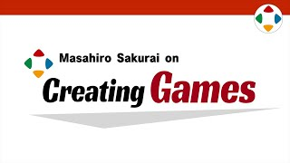
速览
有限公司 Sora 的樱井政博——《星之卡比》《任天堂明星大乱斗》的导演/游戏设计师——在第一集说明频道的目标：把全世界游戏的乐趣稍微垫高一点。不懂做游戏的人也推荐看。不是游戏实况，而是讲游戏开发与游戏乐趣。游戏设计和「好玩」很模糊、因人而异；他常被请去游戏学校讲课，但那只面向有限的人；GDC、CEDEC 等技术会议也不太适合讲游戏设计论。但游戏设计的诀窍似乎确实存在，也有人请他传授；更重要的是，让与游戏制作无关的人也能窥见这个世界。所以他认为做成节目，比讲课、讲座、写书更有效：想入行的人能了解游戏原理，在职开发者能获得可参考的思路，不想那么拼的人也能窥见其他行业的现场；玩家更懂游戏，也能玩得更开心。请把这里的内容看作对你自身经验的「小小加成」——基础是观众自己的经验、技术和想法。他会讲很初级的东西，开发现场的常识也会掰开讲，让没做过游戏的人也懂；反之不深入技术（各开发环境差异大、保密事项多），请别来「技术碾压」。每集 2~5 分钟，干脆利落地结束；有日文版和英文版。游戏画面会较多使用经典作品；有时会展示大乱斗开发版画面和他做的部分开发资料，已向任天堂打过招呼，但节目由他自己运营、与任天堂无关。频道不以变现为目的，不插广告、也不刻意拉长；有剪辑和翻译人员，越做越亏——视为志愿活动和对游戏业的投资。最后：给做游戏或想做游戏的人带来小小的启发，让玩家更懂游戏机制，让业外人士看看别人的工作，更重要的是增加未来的游戏制作者，从而增加更好玩的游戏诞生的可能。「小众，但有别处没有的价值，多年后仍可参考」。他承诺之后不再呼吁订阅，所以只在这一集请大家订阅。
1. 频道的目标 0:00
有限公司 Sora 的樱井政博，《星之卡比》《任天堂明星大乱斗》的导演/游戏设计师。
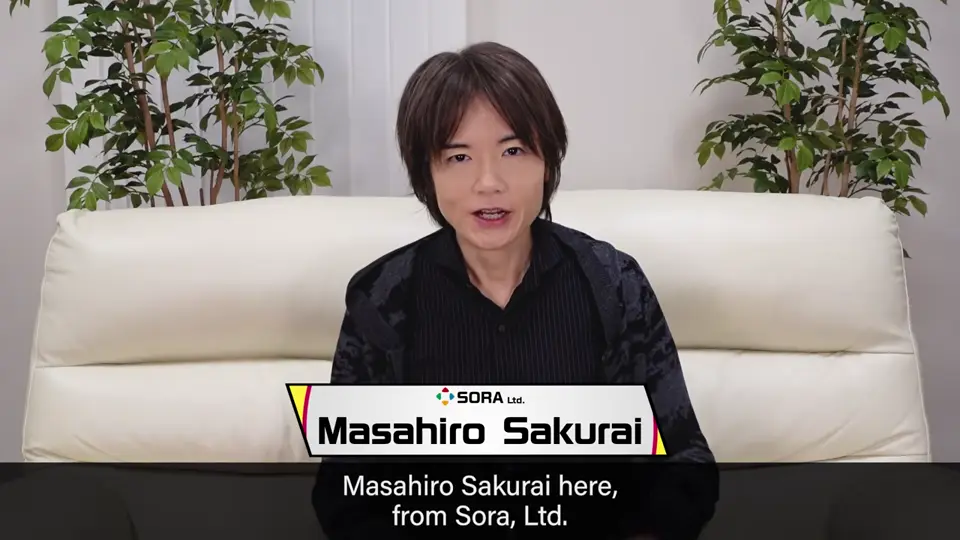
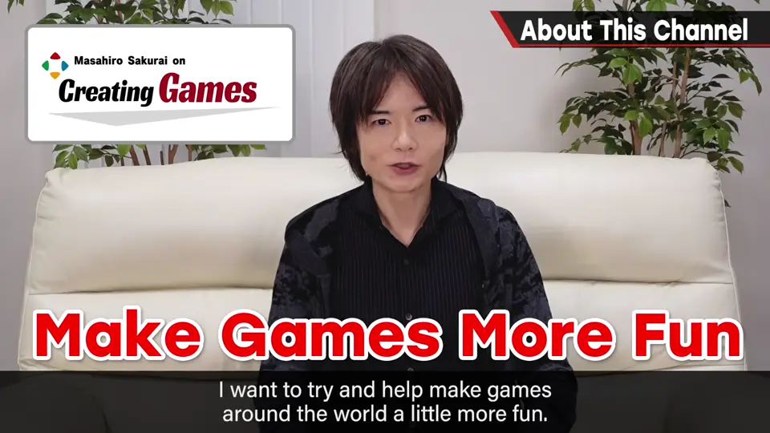
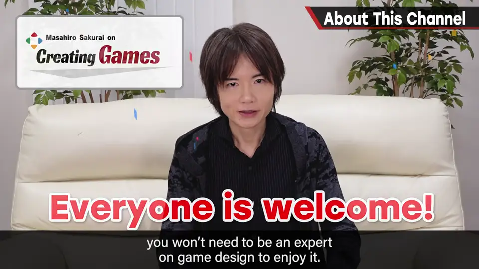
不是游戏实况，而是讲游戏开发与游戏乐趣。
2. 为什么做成节目 0:44
游戏设计与「好玩」很模糊，因人而异。
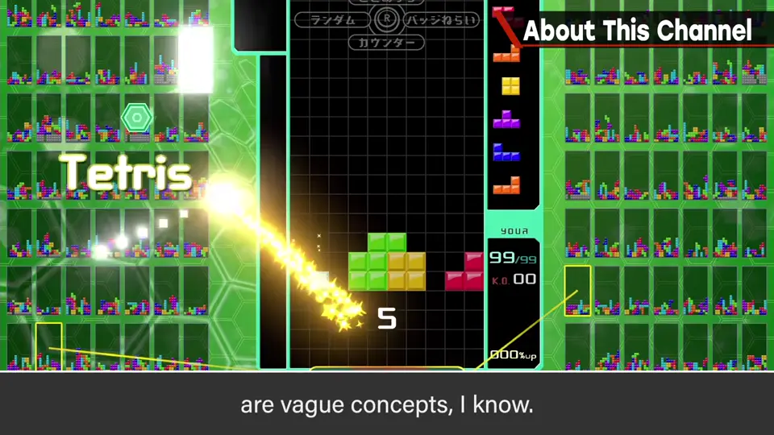
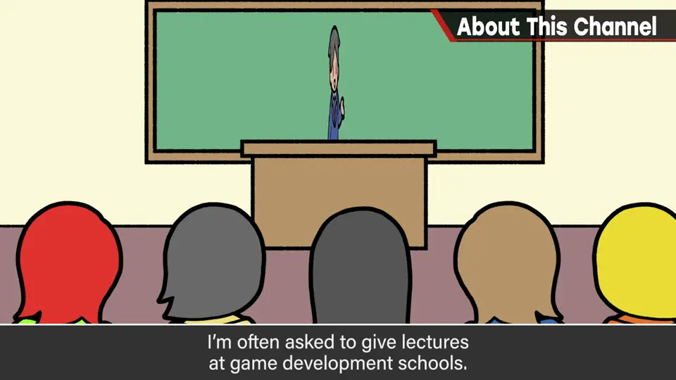
- 常被请去游戏学校讲课，但只面向有限的人。
- GDC、CEDEC 等技术会议不太适合讲游戏设计论。
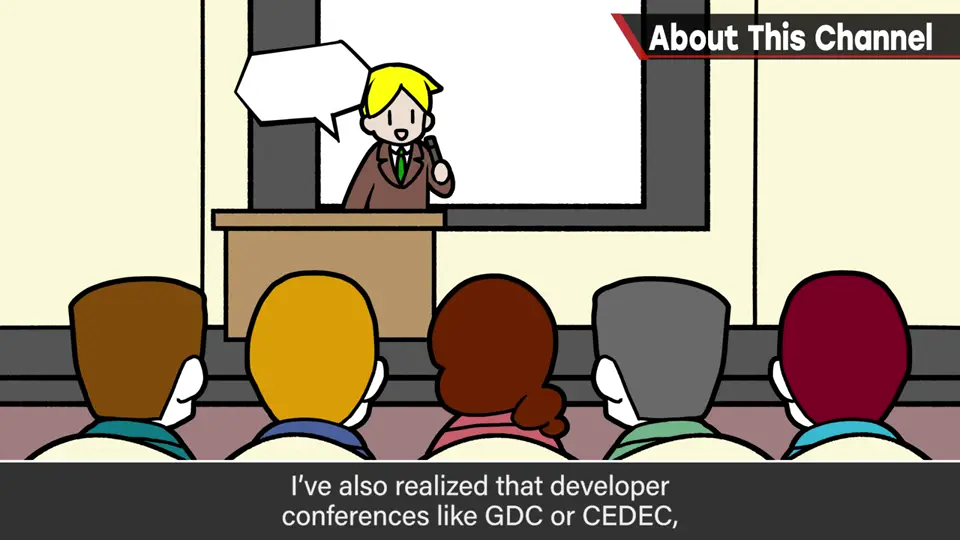
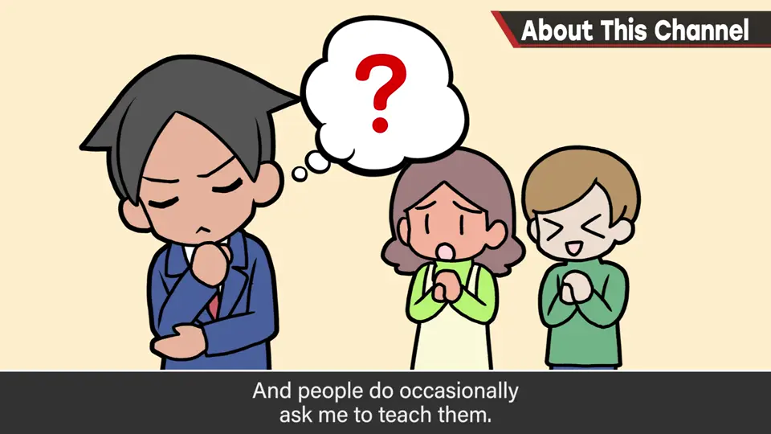
- 但诀窍似乎确实存在，也有人请他传授；更重要的是让与游戏制作无关的人也能窥见这个世界。
3. 给谁看 1:48
- 想入行的人：了解游戏原理的契机。
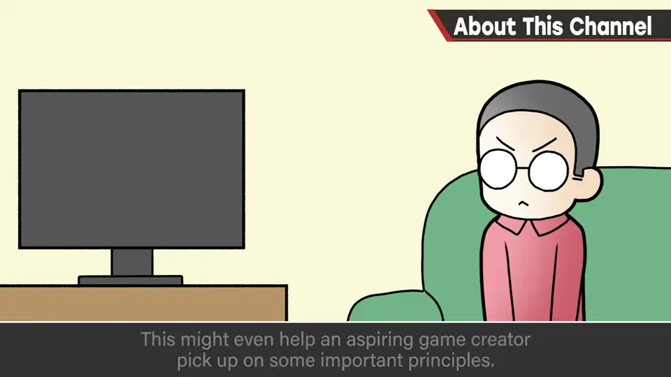
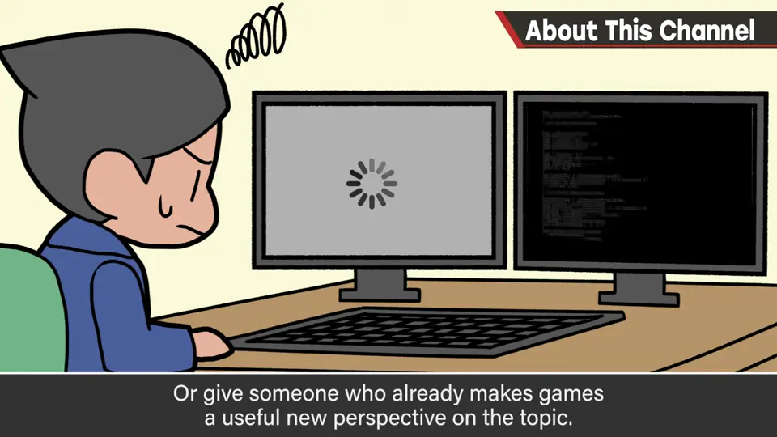
- 在职开发者：可参考的思路。
- 其他人：窥见别的行业的现场和想法。
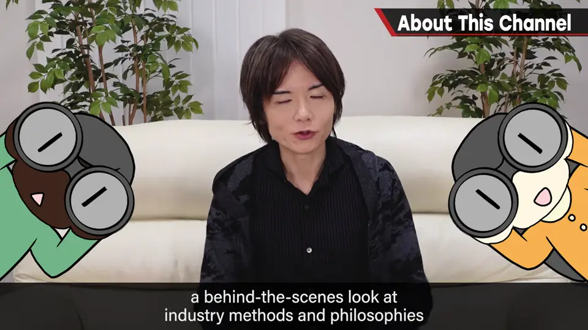
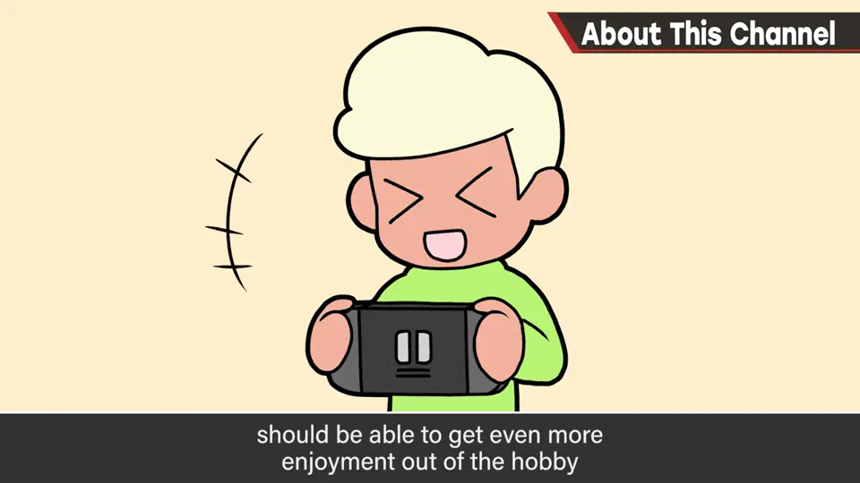
- 玩家：更懂游戏，也能玩得更开心。
4. 小小的加成 2:30
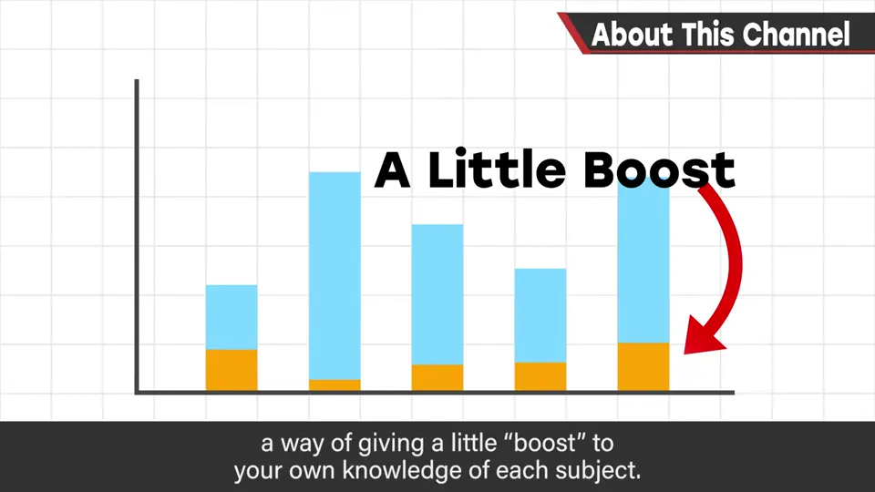
会讲很初级的东西，开发现场的常识也会掰开讲；反之不深入技术——开发环境差异大、保密事项多，请别来「技术碾压」。
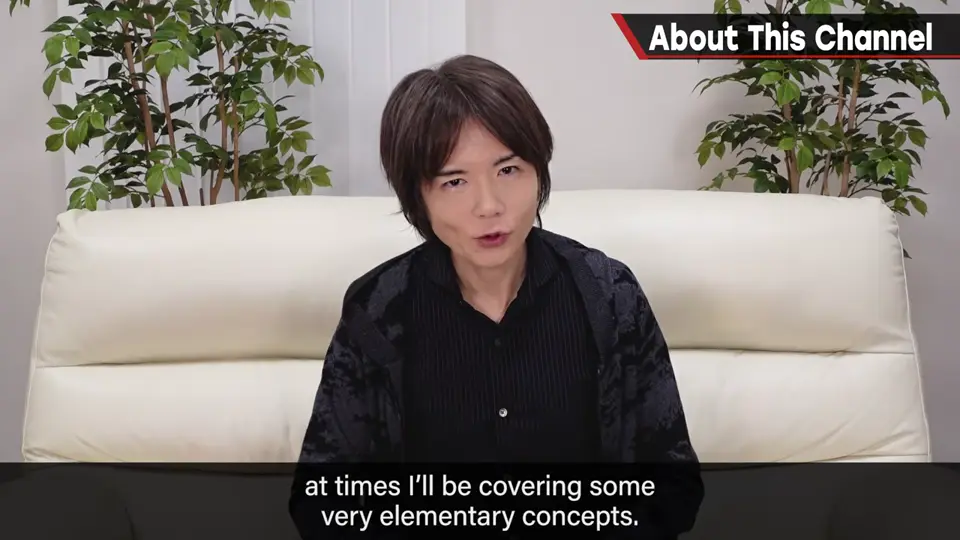
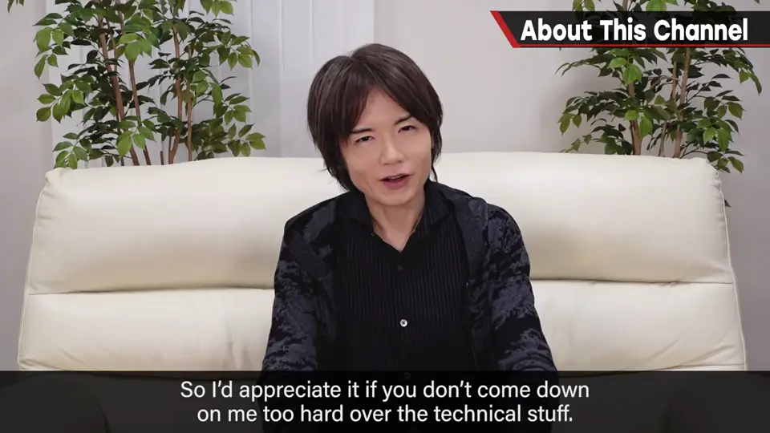
讲太久记不住，所以每集 2~5 分钟，干脆利落地结束。有日文版和英文版。
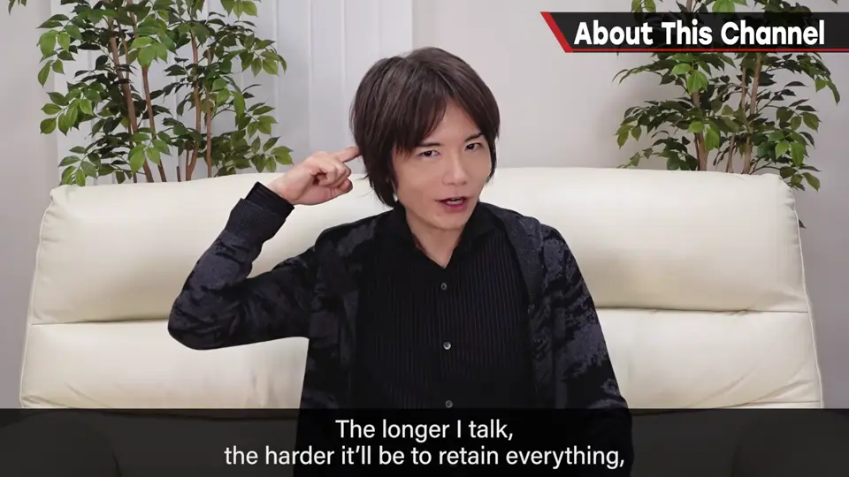
5. 素材与任天堂 3:58
游戏画面会较多使用经典作品；有时会展示大乱斗开发版画面和他做的部分开发资料，已向任天堂打过招呼。
6. 不变现 4:48
不以变现为目的：不插广告，也不刻意拉长视频。有剪辑和翻译人员，越做越亏——视为志愿活动和对游戏业的投资。
以游戏开发者为目标会是非常小众的频道，效果可能完全看不见，但先正面去做。
7. 再次说明目标 5:20
给做游戏或想做游戏的人小小的启发；让玩家更懂游戏机制；让业外人士看看别人的工作。
他承诺之后不再呼吁订阅，所以只在这一集请大家订阅。
自测题
1. 频道的目标是什么？
把全世界游戏的乐趣稍微垫高一点。 0:27
2. 为什么频道不深入技术话题？
各开发环境差异大、保密事项多。 3:27
3. 樱井如何定位频道不变现、越做越亏这件事？
视为志愿活动和对游戏业的投资。 5:00